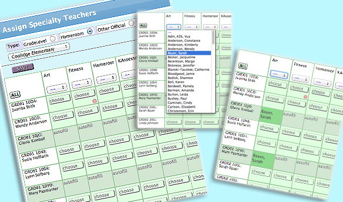

<div class='panelBlock' id='specialtyClasses'>
<div class='screenshot'>

<div class='caption'>

<div class='firstLine'>
Specialty classes can be  based on homerooms, grade levels, school or custom gradebooks.
</div>
<div class='subsequentLine'>
You can click 'All' and assign a teacher to every row.
</div>

</div>

<div class='image'>

		
</div>

</div>